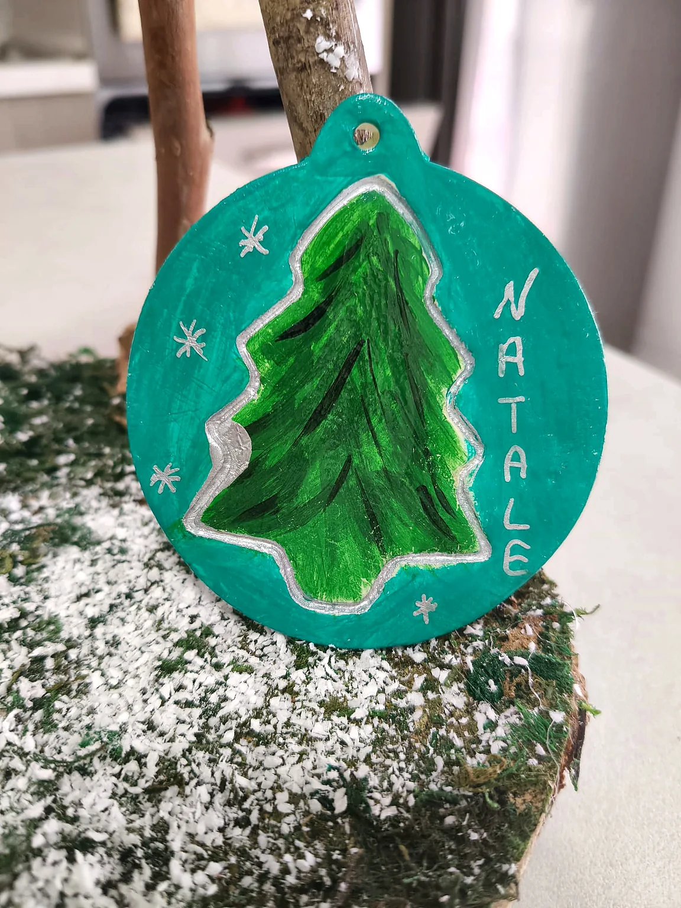
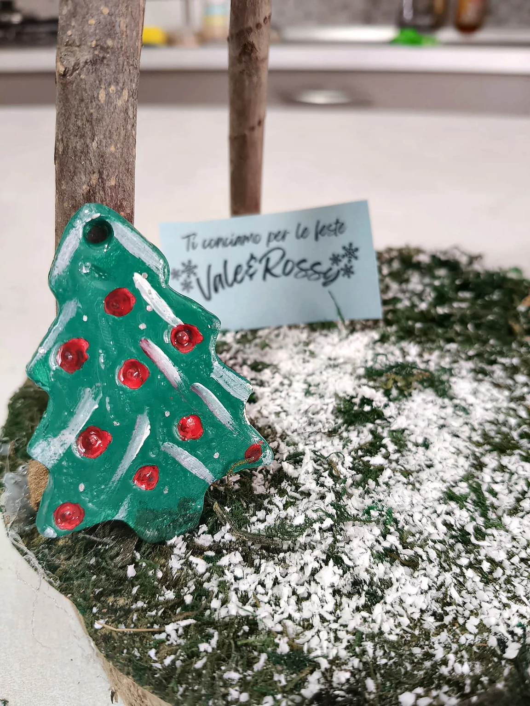
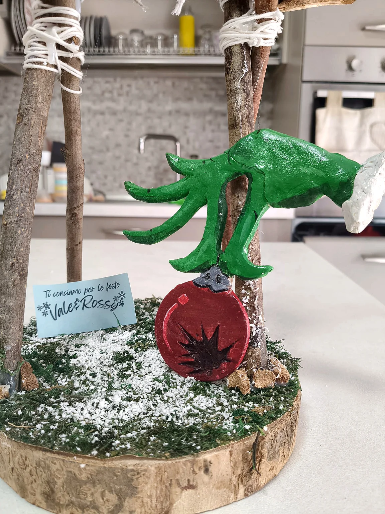
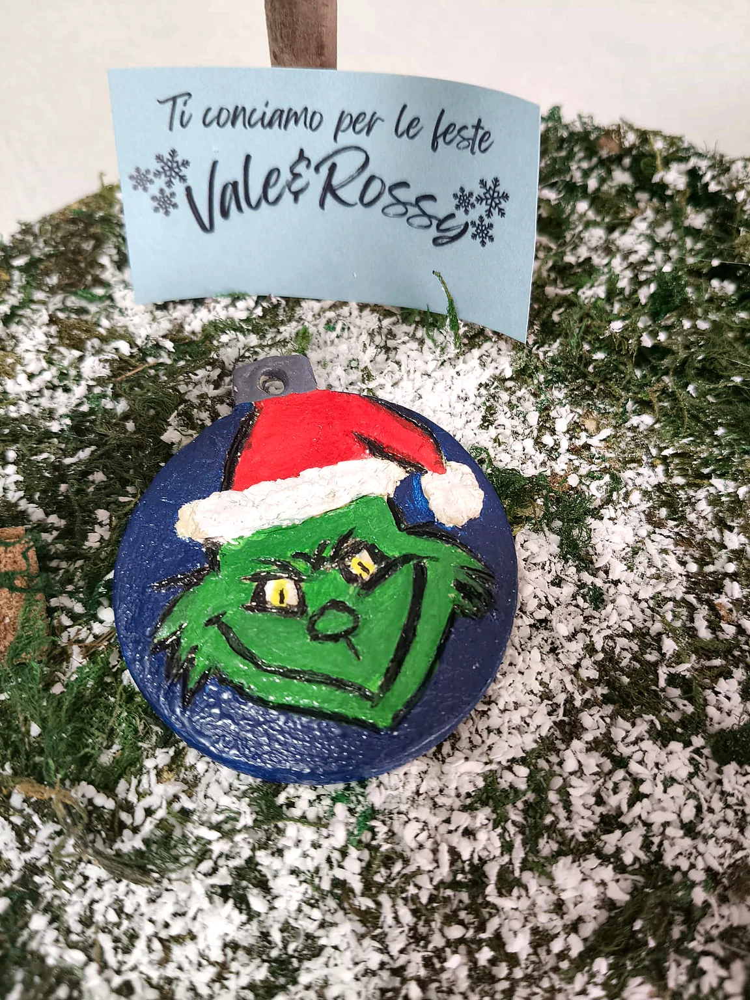

C’è un po’ di Natale
in ogni piccola cosa.
Tra pennelli, nastri e un pizzico di fantasia prendono vita piccole creazioni fatte a mano. Decorazioni nate per custodire la parte più bella delle feste: i ricordi.
Ogni piccola imperfezione racconta qualcosa.


Nascono da un'idea, e da due mani che ci credono.
Piccole meraviglie da scoprire.
Sfoglia le nostre decorazioni: ognuna ha un dettaglio diverso, un colore speciale, una piccola storia. Altre creazioni stanno arrivando!
da scoprire


fantasia ✳
Il bello delle cose
fatte con calma.
Si comincia da un’idea, poi arrivano i colori, le mani all’opera e quel momento in cui un piccolo addobbo trova la sua personalità. È così che immaginiamo il Natale: semplice, caldo, pieno di dettagli.
Ogni pennellata è leggermente diversa dall’altra. Ed è proprio questo che rende speciale un oggetto artigianale.
Torna alle creazioniCome funziona?
Questo è un piccolo catalogo di creazioni artigianali, non un negozio con carrello.
Scegli la tua preferita
Sfoglia la galleria e guarda i dettagli di ogni creazione.
Chiedi informazioni
Se qualcosa ti piace, puoi richiedere dettagli e disponibilità.
Organizziamoci insieme
Eventuali richieste vengono concordate direttamente, senza acquisti automatici.
Passa a trovarci,
anche solo con un messaggio.
Hai visto una decorazione che ti ha fatto sorridere? Contatta Vale & Rossy per informazioni sulle creazioni e sulla disponibilità.
I recapiti saranno inseriti prima della pubblicazione.